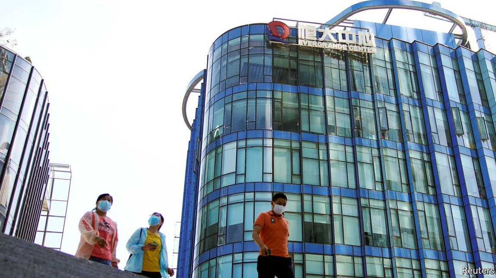

2021-09-29T18:16:28+00:00
Bail-outs and bedlam
【首文】纾困与混乱
【首文】紓困與混亂
Evergrande’s crisis highlights China’s shortcomings
恒大危机突显中国短板
恆大危機突顯中國短板
Can “common prosperity” lead to financial stability in China?
“共同富裕”能带来金融稳定吗？
“共同富裕”能帶來金融穩定嗎？

CHINA’S VAST and opaque financial system has long posed a threat to its economy and the world. The agonies of Evergrande, a property firm with towering debts, are a reminder of how hard it is to manage the risks. The government is attempting to impose an orderly default on some of its creditors but faces the risk of contagion. The episode also highlights a bigger question of whether President Xi Jinping’s crackdown on business will make it even harder to create a reformed financial system that is safer, more open and more efficient.
中国的金融体系庞大而不透明，长期对自身经济和整个世界构成威胁。债台高筑的房地产公司恒大陷入困境，再度让人看到管理这种风险的难度。中国政府正试图对部分债权人实施有序违约，但又可能导致违约风险扩散。这起事件还突显出一个更大的问题，即国家主席习近平对商界的打压是否会导致中国更难推进改革以建成更安全、开放和高效的金融体系。
中國的金融體系龐大而不透明，長期對自身經濟和整個世界構成威脅。債台高築的房地產公司恆大陷入困境，再度讓人看到管理這種風險的難度。中國政府正試圖對部分債權人實施有序違約，但又可能導致違約風險擴散。這起事件還突顯出一個更大的問題，即國家主席習近平對商界的打壓是否會導致中國更難推進改革以建成更安全、開放和高效的金融體系。
Part of what makes China’s financial industry daunting is its size. Banking assets have ballooned to about $50trn and they sit alongside a large, Byzantine system of shadow finance. Total credit extended to firms and households has soared from 178% of GDP a decade ago to 287% today. The industry suffers from opacity, a lack of market signals and the erratic application of rules. Property is part of the problem. Families funnel their savings into apartments rather than casino stockmarkets or state-run banks. Real-estate developers raise debts in the shadow-banking system in order to finance epic construction booms.
中国的金融业令人望而生畏，规模是一个原因。银行业资产已膨胀到约50万亿美元，而且与之并存的还有一个庞大而错综复杂的影子金融系统。提供给企业和家庭的信贷总额已从十年前占GDP的178%飙升到如今的287%。整个行业受累于不透明、缺乏市场信号，以及规则实施变化无常。房地产是问题的一部分。家庭把积蓄注入房产，而非投向赌场式的股市或者放在国有银行。房地产开发商通过影子银行系统借贷，用这些资金大兴土木。
中國的金融業令人望而生畏，規模是一個原因。銀行業資產已膨脹到約50萬億美元，而且與之並存的還有一個龐大而錯綜複雜的影子金融系統。提供給企業和家庭的信貸總額已從十年前佔GDP的178%飆升到如今的287%。整個行業受累於不透明、缺乏市場信號，以及規則實施變化無常。房地產是問題的一部分。家庭把積蓄注入房產，而非投向賭場式的股市或者放在國有銀行。房地產開發商通過影子銀行系統借貸，用這些資金大興土木。
As well as being big, the system is inefficient at allocating capital, dragging down growth. Nor is this a problem the world can ignore. Chinese firms have issued roughly $1trn of dollar bonds, many of them snapped up by foreign investors. A liquidity crunch in China’s economy would hurt global activity, from commodity markets to the sales of luxury goods.
除了规模大，这个金融体系的资本配置效率低下，拖累了增长。这对全世界也是个不容忽视的问题。中国企业发行了约一万亿美元的美元债券，很多由外国投资者抢购。假如中国经济出现流动性紧缩，从大宗商品市场到奢侈品销售的全球活动都将遭受损害。
除了規模大，這個金融體系的資本配置效率低下，拖累了增長。這對全世界也是個不容忽視的問題。中國企業發行了約一萬億美元的美元債券，很多由外國投資者搶購。假如中國經濟出現流動性緊縮，從大宗商品市場到奢侈品銷售的全球活動都將遭受損害。
With an illiquid portfolio of property projects financed by $300bn of liabilities, 80% of them short-term, Evergrande has a huge liquidity mismatch. It has struggled to cope with new government rules designed to curb excessive borrowing in the real-estate industry but which may now have backfired.
恒大的房地产项目流动性低下，其资金源于3000亿美元的负债，其中80%是短期债务，存在严重的流动性错配。恒大苦于应对政府旨在遏制房地产业过度借贷的新规，而这些规定现在看来可能是事与愿违。
恆大的房地產項目流動性低下，其資金源於3000億美元的負債，其中80%是短期債務，存在嚴重的流動性錯配。恆大苦於應對政府旨在遏制房地產業過度借貸的新規，而這些規定現在看來可能是事與願違。
Bailing out financial firms can be distasteful but necessary—just ask the officials who rescued AIG and Citigroup. China’s government is worried that a default could cause contagion in the bond market and shadow-banking industry and lead to job losses and stalled projects in the property sector, which underpins a fifth or so of GDP. As we went to press, it was unclear whether the government would blink and rescue the firm.
救助金融企业有时令人反感但又实属必要，问问当日给美国国际集团（AIG）和花旗集团纾困的官员就知道了。中国政府担心违约会在债券市场和影子银行业蔓延，并在房地产行业引发失业潮和项目停工——这个部门撑起了中国约五分之一的GDP。截至本期文章付印时，仍不清楚中国政府是否会手软而救恒大。
救助金融企業有時令人反感但又實屬必要，問問當日給美國國際集團（AIG）和花旗集團紓困的官員就知道了。中國政府擔心違約會在債券市場和影子銀行業蔓延，並在房地產行業引發失業潮和項目停工——這個部門撐起了中國約五分之一的GDP。截至本期文章付印時，仍不清楚中國政府是否會手軟而救恆大。
While the dilemma of “too-big-to-fail” is common, many elements of the Evergrande saga highlight China’s shortcomings. Evergrande’s statements about whether it has missed interest payments have been confusing, leaving investors in the dark. It is unclear if the formal hierarchy of creditors matters or whether the Communist Party’s view of who counts will override it. The sense of opacity and political machination is part of a pattern. Huarong, a state-owned financial firm suffering from fraud, hid a $16bn loss for months. It was eventually bailed out in August.
虽然“大而不倒”的窘境很常见，但恒大这场持续多日的大戏的许多元素都突显了中国的短板。恒大就是否已逾期付息发表的声明措辞含混，让投资者不明就里。目前还不清楚是以债权人的正式求偿等级为准，还是由政府决定债权人孰重孰轻。这种不透明和充满政治谋划的感觉都是一套处理模式的组成部分。受欺诈拖累的国有金融集团华融曾把亏损160亿美元的情况隐瞒了数月。到了8月，政府最终还是出手纾困。
雖然“大而不倒”的窘境很常見，但恆大這場持續多日的大戲的許多元素都突顯了中國的短板。恆大就是否已逾期付息發表的聲明措辭含混，讓投資者不明就裡。目前還不清楚是以債權人的正式求償等級為準，還是由政府決定債權人孰重孰輕。這種不透明和充滿政治謀劃的感覺都是一套處理模式的組成部分。受欺詐拖累的國有金融集團華融曾把虧損160億美元的情況隱瞞了數月。到了8月，政府最終還是出手紓困。
Evergrande shows the importance of deeper financial reforms. But what might they look like? Liberal reformers have longed for a clean-up of bad debts, a loosening of controls over prices (including the exchange rate), transparency and independent courts that can enforce property rights. Such a system would allocate capital better and be less prey to moral hazard.
恒大事件显示了深化金融改革的重要性。但会是怎样的改革呢？自由派改革者一直渴望全面清理坏账，放松对价格（包括汇率）的管制，提高透明度，并建立能实施产权保护的独立法院。这样的体系将能更好地配置资本，也更少受道德风险的影响。
恆大事件顯示了深化金融改革的重要性。但會是怎樣的改革呢？自由派改革者一直渴望全面清理壞賬，放鬆對價格（包括匯率）的管制，提高透明度，並建立能實施產權保護的獨立法院。這樣的體系將能更好地配置資本，也更少受道德風險的影響。
Mr Xi’s authoritarian regime helps financial stability in some ways: he sees excessive borrowing as a security risk and may terrify debt-hungry tycoons into being more cautious. The centralisation of power may make it easier to control crises at sprawling organisations such as Evergrande.
习近平的威权体制在某些方面有助于金融稳定性：他视过度借贷为安全隐患，也许能震住那些渴求借贷的大亨，让他们更谨慎行事。中央集权也许更方便控制恒大这类无序扩张的机构酝酿的危机。
習近平的威權體制在某些方面有助於金融穩定性：他視過度借貸為安全隱患，也許能震住那些渴求借貸的大亨，讓他們更謹慎行事。中央集權也許更方便控制恆大這類無序擴張的機構醞釀的危機。
But his broad agenda to reassert control over the economy, information flows, courts and regulators cuts against the thrust of financial reform. Why would he want a more open capital account, which would raise the risk of capital flight following political purges, or private creditors to have stronger rights, or to delegate the role of picking tomorrow’s industries to investors? Even if Evergrande escapes calamity, the consequences of Mr Xi’s policies for the long-term health of the financial system are only just starting to sink in. ■
但是，他更大的目标是重新加强对经济、信息流动、法院和监管机构的控制，这与金融改革的主旨是矛盾的。他为何要放开资本账户管制呢，假如这会方便资本在政治清洗后外逃的话？他又为什么会想让私人债权人拥有更大的权利？为什么要把未来发展什么产业的选择权交给投资者？即使恒大逃过这一劫，习近平的政策对金融系统长期健康的影响也只是初现端倪。
但是，他更大的目標是重新加強對經濟、信息流動、法院和監管機構的控制，這與金融改革的主旨是矛盾的。他為何要放開資本賬戶管制呢，假如這會方便資本在政治清洗後外逃的話？他又為什麼會想讓私人債權人擁有更大的權利？為什麼要把未來發展什麼產業的選擇權交給投資者？即使恆大逃過這一劫，習近平的政策對金融系統長期健康的影響也只是初現端倪。